How to Upgrade Milesight Gateway Firmware Using Node-Red

| Version | Update Time | Description | Author |
| 1.0 | Sept 11, 2024 | Initial version | Charles |
| 2.0 | Nov 11, 2024 | Optimized the method of filling in the gateway firmware. | Charles |
Description
When you attempt to upgrade the gateway firmware via the Milesight gateway’s front-end page and the upgrade fails due to internet speed issues, but your Milesight gateway can still access the internet, you can use the Node-Red feature of the Milesight gateway to complete the gateway firmware upgrade. Additionally, you can use the built-in Node-Red feature in the Milesight gateway to automate the upgrade process.
Requirement
Milesight Gateway: UG56/UG65/UG67
Configuration
Step 1: Enable the Node-Red feature on the Milesight gateway.
Please ensure that your Milesight gateway can access the internet. You can use the Ping tool on the Milesight gateway to check if the gateway currently has internet access. If you find that your Milesight gateway cannot access the internet, please refer to this article(https://support.milesight-iot.com/support/solutions/articles/73000514278-how-to-connect-milesight-gateway-to-the-internet) to configure the network.
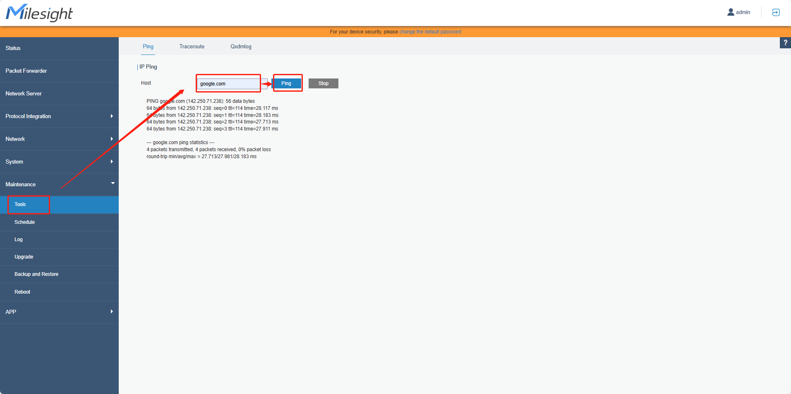
Step 2: Enable the Node-Red feature on the Milesight gateway.
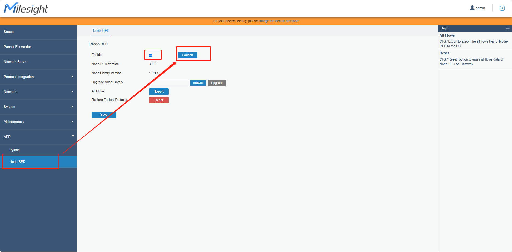
Step 3: Click this icon( Download flows (UPGRADE).json) to download the node flow file (JSON file), and then import this JSON file into Node-Red.
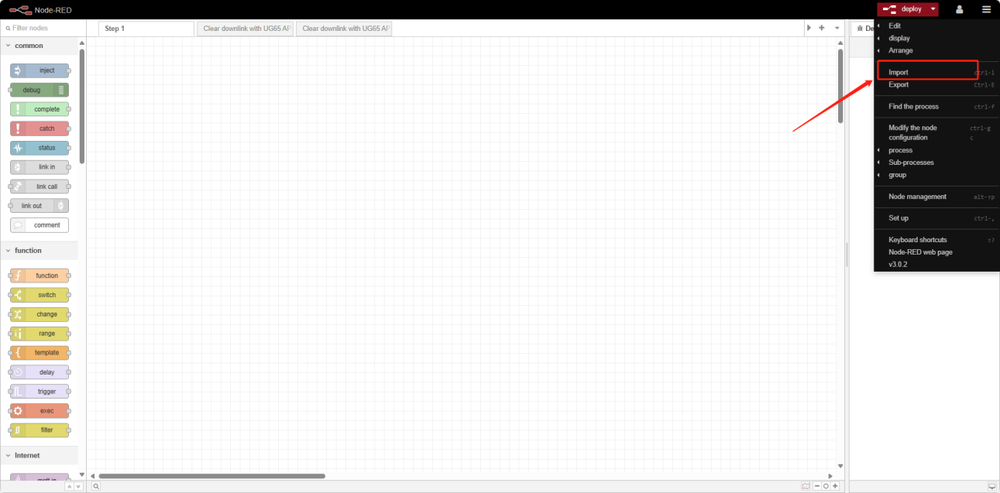
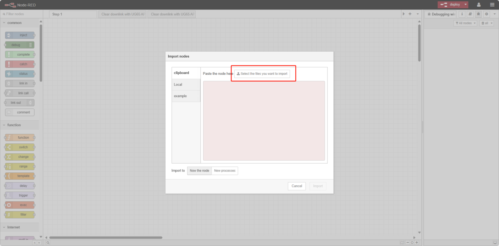
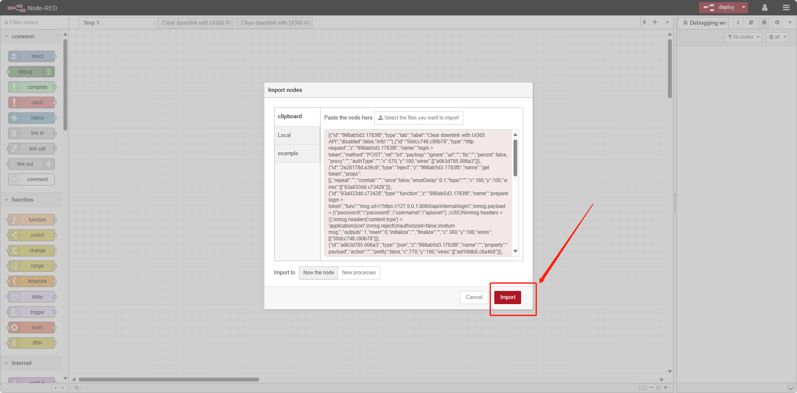
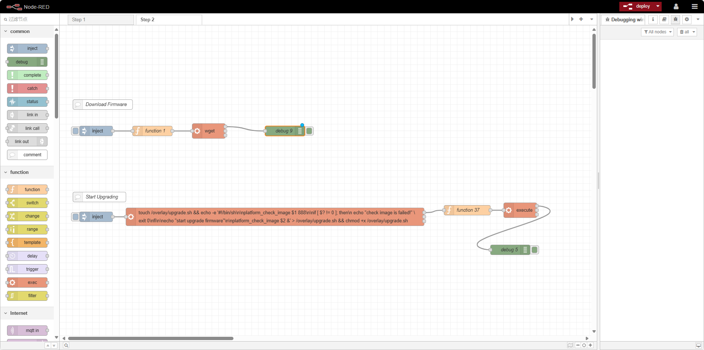
Step 4: You can click this link(https://www.milesight.com/iot/resources/download-center/#firmware-lorawan-gateway) to go to the Milesight official website, and then select the relevant firmware for your Milesight gateway based on the gateway model. Next, double-click the 'Download Firmware' node in Node-Red, and enter the firmware version you wish to upgrade to in the corresponding input field. For example, if I want to upgrade the Milesight gateway to version 60.0.0.43-r3, I can proceed as follows.
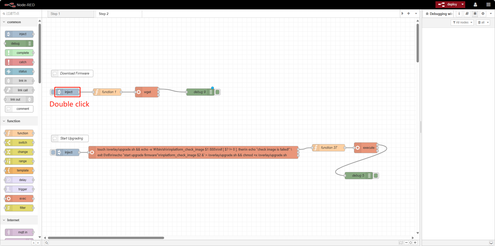
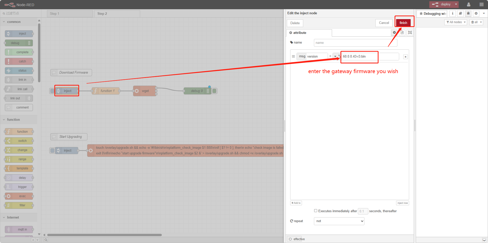
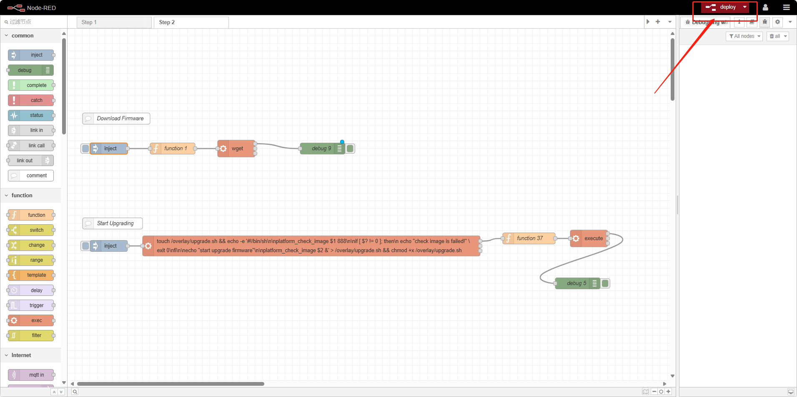
Step 5: You can click this ‘Download Firmware’ inject node to allow the gateway to download the relevant firmware. While the gateway is downloading the firmware, this EXEC node will display a blue icon, indicating that the download task is in progress. This download process may take about 2 minutes.
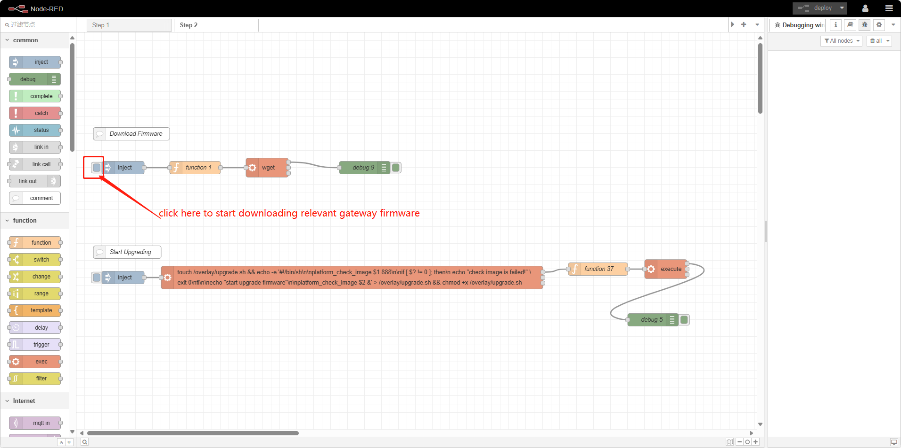
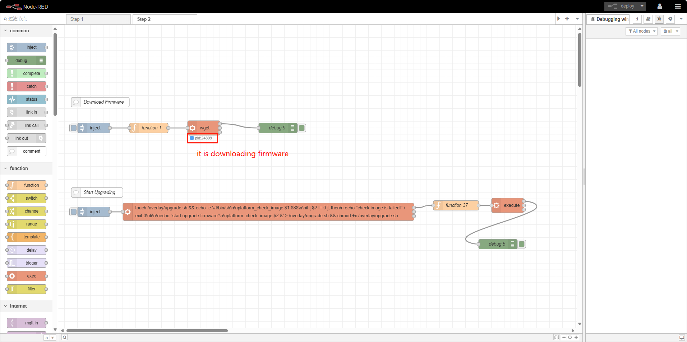
Once the download task is completed, you will observe that the blue icon has disappeared, and you will see the output result of the code as 0 in the right-hand console.
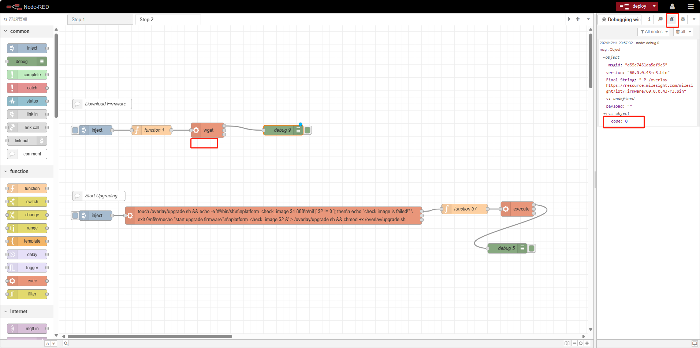
Step 6: After successfully downloading the relevant gateway firmware, you can click 'Start Upgrading' inject node to begin the firmware upgrade process for the gateway. If you have entered the correct gateway firmware, you will see 'start upgrade firmware' output in the console on the right side of the Node-Red page. During the firmware upgrade process, your gateway will automatically restart, which is normal. About three minutes after the gateway starts upgrading, you can log in to the gateway's front-end page and see that the firmware version has been successfully upgraded.
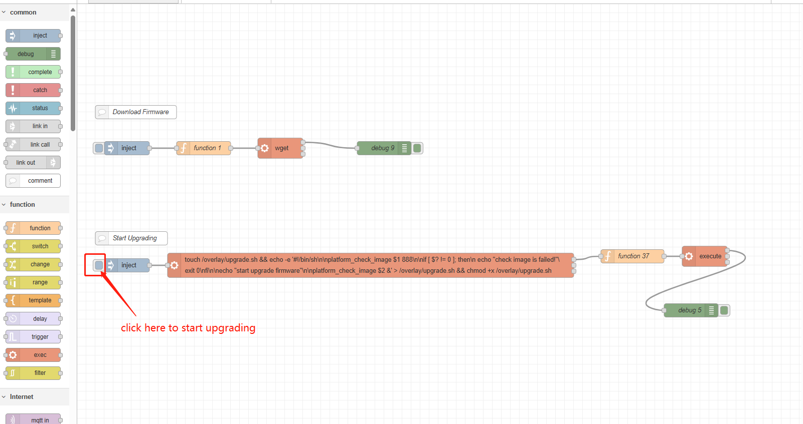
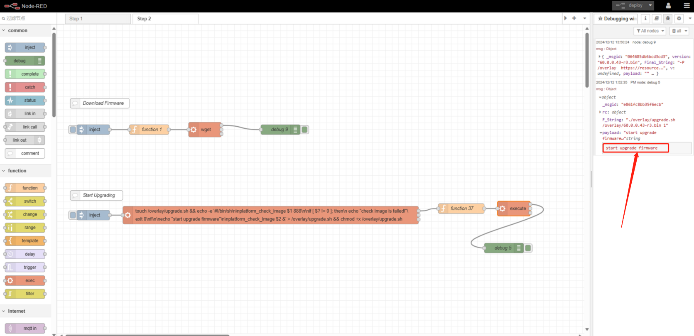
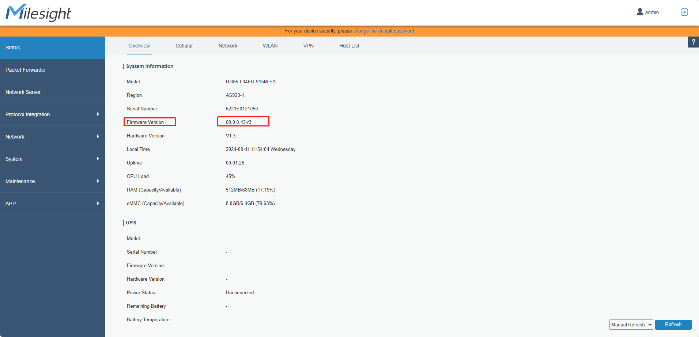
__END__